TIP
本文原作者为@Slian
# CLion安装和激活
TIP
@ryanlee2014: Jetbrains套件下的其他IDE也可以使用本Manual的前五点完成激活。
TIP
RhythmLian: CLion的实用扩展工具。
WARNING
本文内容以Windows视角进行整理，关于macOS系统中不同的部分将会使用warning tag特别标注
# 关于ToolBox
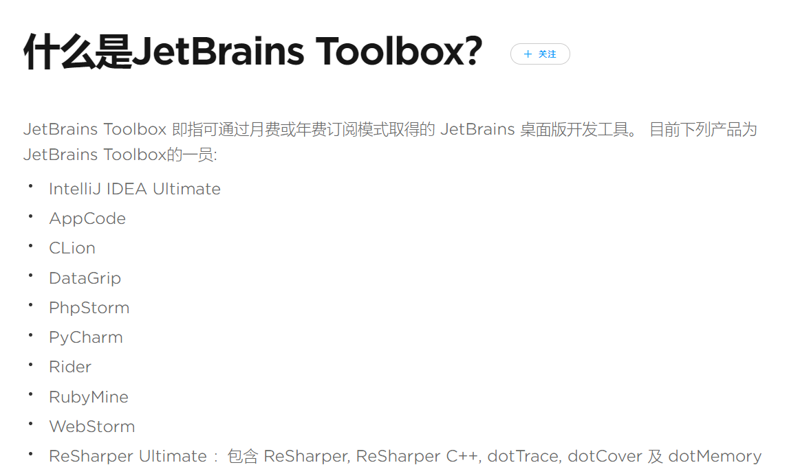
简单来说，就是可以下载JetBrain全家桶（我全都要）
# First: 登录激活学生邮箱
登录中国石油大学（北京）学生邮箱，默认用户名为学号（例如2017010001），默认密码为生日（例如20000101），第一次登录后需要修改密码，请务必牢记修改后的密码。
# Second: 申请JetBrain账号&&申请学生免费版本JetBrain全家桶
在此之前一定要申请一个JetBrain的账号
点击前往JetBrains账号申请链接
Not Registered yet?
Create JetBrains Account！
注意，你所申请的邮箱账号必须是你的学生邮箱号！
之后请点击前往JetBrains Toolbox 专业开发工具 学生免费授权计划
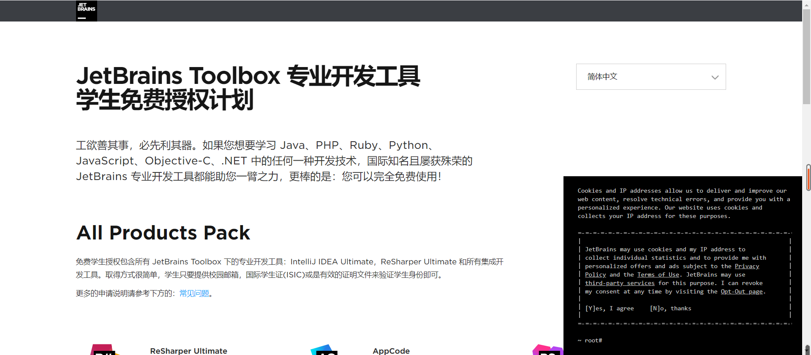
点击立刻申请，就会出现以下画面
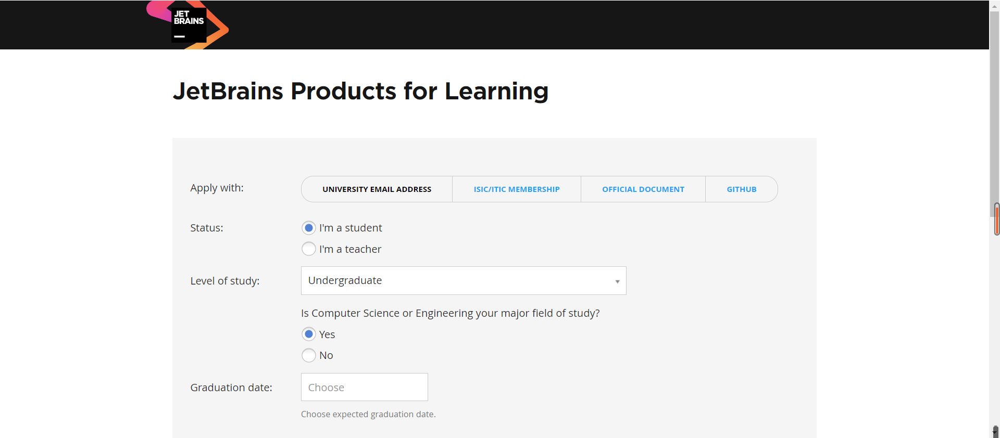
填写
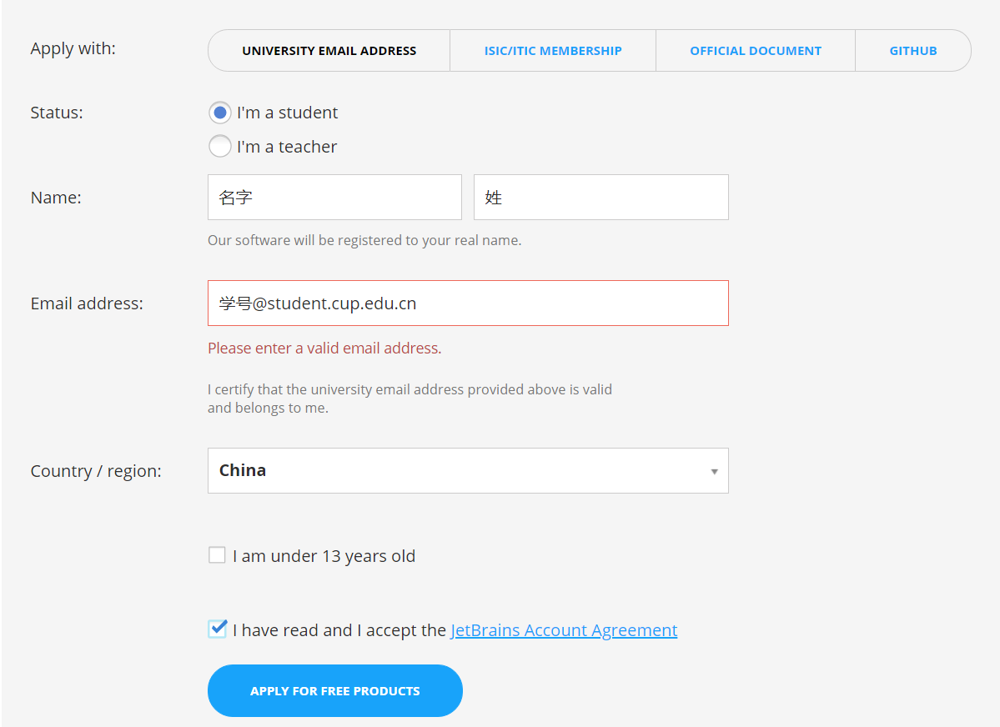
以下必点
重新打开学生邮箱，此时会看到来自Jetbrains的验证邮件，点击链接即可。
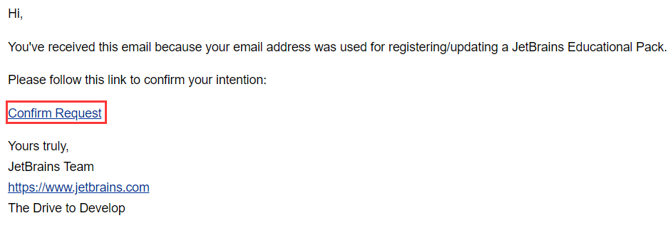
在新打开的页面中设置Jetbrains账号的密码即可。
# Third：下载ToolBox
登录页面下载
注意
WARNING
macOS用户同样需要注意用户名问题，请参考macOS的用户名更改方式
如果你的用户名字为中文（之前我得用户名为C:\Users\单联天）,请务必设置第四步。如果用户名为英语，即可跳过第四步。
下载完成以后
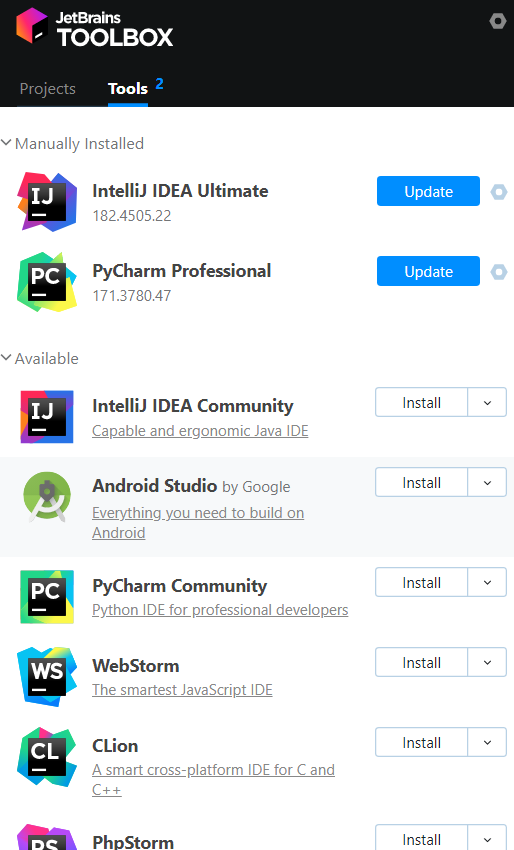
点击右上角的Setting键，找到相关目录，然后找到文档目录，将文件迁到别的盘（为了节省C盘空间）
TIP
@ryanlee2014: 如果你的C盘空间足够，那么建议你装在C盘,可以节省许多不必要的麻烦。
WARNING
macOS用户无需切换盘符
文件迁到别的盘的情况下，下载的文档即可在别的盘下载下来。
（ToolBox会将所有文件下载到自己的目录下）
# Forth：Windows10修改中文用户文件夹
尽早将所有文件名用英文命名，这是一个好习惯。（不然配置编译器的时候就会很吃亏）
参考文章：Windows10_如何修改用户文件夹下的中文用户文件夹名
https://blog.csdn.net/tanzey/article/details/82657816
WARNING
macOS用户更改用户名的教程请自行通过搜索引擎查找。 请善用Google,如果你在校园网可以使用Google IPv6
亲身实践做完之后，用杀毒软件做一下检测，自动将别的环境变量改过来了。
（不然也可以自己重装一下系统，换一个用户名-English）
或者，可以花个钱，重装系统。
# Fifth：下载并激活CLion
# 下载
打开ToolBox，找到CLion，点击install。
等待即可
最终文档目录在开始菜单中的最近添加显示
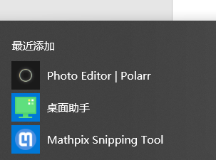
# 激活
打开CLion，在出现的激活窗口输入Jetbrains账号（学生邮箱）密码（自己设定），点击“Activate”按钮即可。
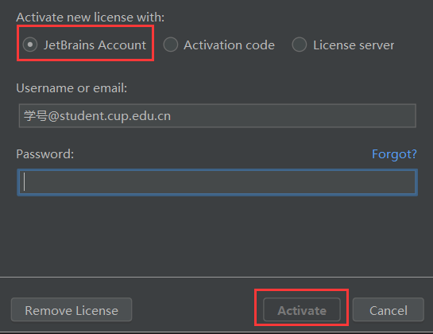
# Sixth：配置CLion
WARNING
macOS用户请使用
brew install gcc
安装GCC套件，若没有安装HomeBrew的可以Google安装
然后在CLion新建好的项目中，找到CMakeLists.txt文件，在add_executable前一行添加
set(CMAKE_C_COMPILER /usr/local/bin/gcc-9)
set(CMAKE_CXX_COMPILER /user/local/bin/g++-9)
2
其中那个9代表你安装的gcc版本，请根据实际安装的版本更改版本号。如gcc-8,g++-8。
方法一：下载MinGW压缩包
（1）下载MinGW 这里必须注意的是下载压缩包，不要下载离线安装的版本，不然你会装到猴年马月，而且安装难度较大。 打开下载地址：MinGW 进入下载页面
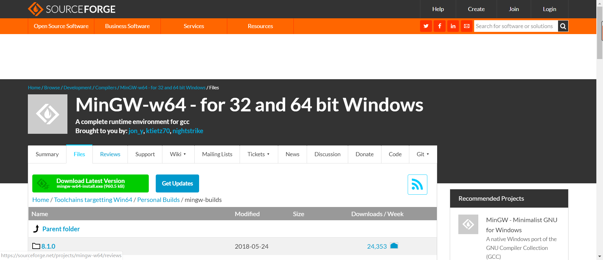
注意：不要手贱点绿色按钮去下载！！！ 往下拉，一直拉到下面的界面，然后就可以下载压缩包了。
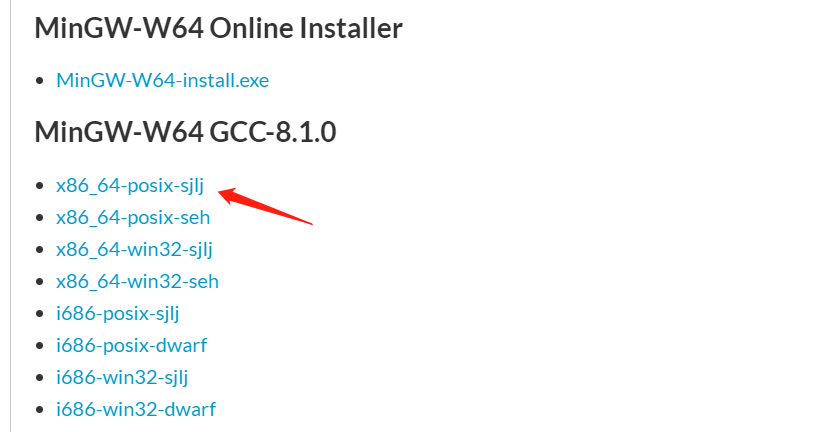
下载了以后必须是解压啊，然后开始配置CLion。
打开CLion，左上角File-Settings-Build-Toolchains，然后点击 + 号
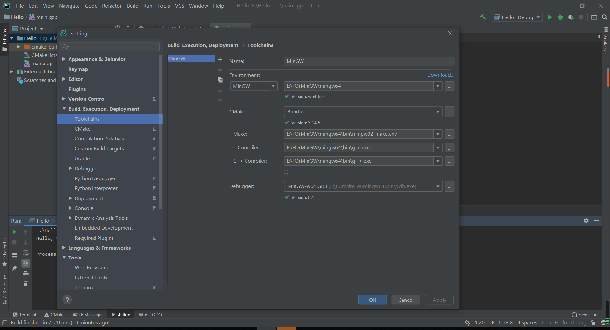
Environment选择MinGW，然后填入刚刚解压的MinGW64的路径（这是我的路径）：
E:\FOrMinGW\mingw64
然后CLion会自动帮你填上所有你该填的东西，点击OK，等调试的小虫子变绿就可以了。
当然，也会出现无法检测成功的情况，这时候就需要手动填写啦。 调试完成！！！
方法二：借助DEV C++
（1）下载安装DEV C++ https://sourceforge.net/projects/orwelldevcpp/
安装默认路径即可，注意，选择full安装！！！
（2）配置CLion
同样地，打开CLion，左上角File-Settings-Build-Toolchains，然后点击 + 号
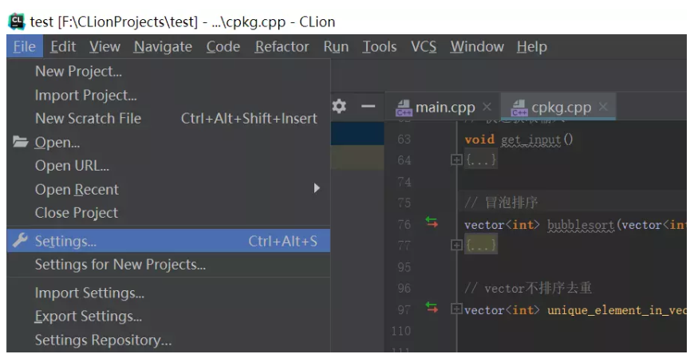
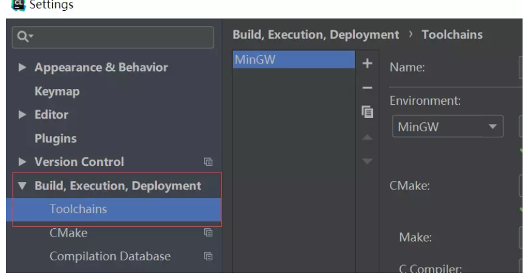
Environment选择MinGW，然后填入刚刚安装的dev cpp的MinGW64的路径：
E:\ Dev-Cpp\MinGW64
然后OK，等一段时间就可以了。
# Seventh：运行一个简单的Program
· 左上角File->New Project
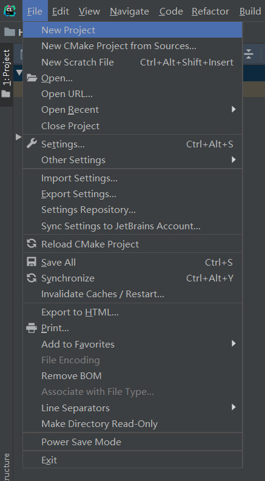
Location是你的存放程序的地址。
我这里设置的是E:\HelloWorld
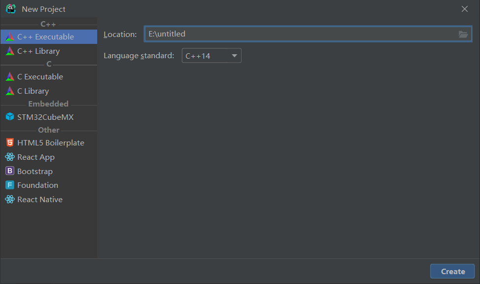
Create以后，出现以下画面，稍微等一会（CLion在加载程序）
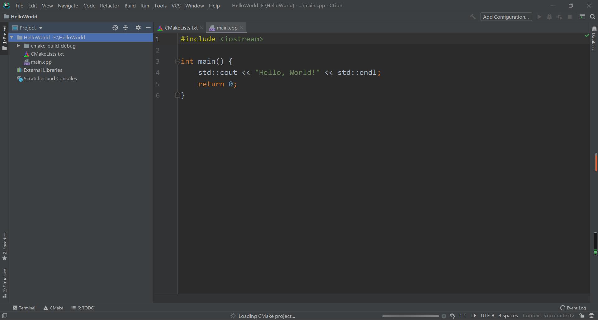
右键程序（随便一处就行）
点击Run ‘HelloWorld’或者使用快捷键Ctrl+Shift+F10运行程序
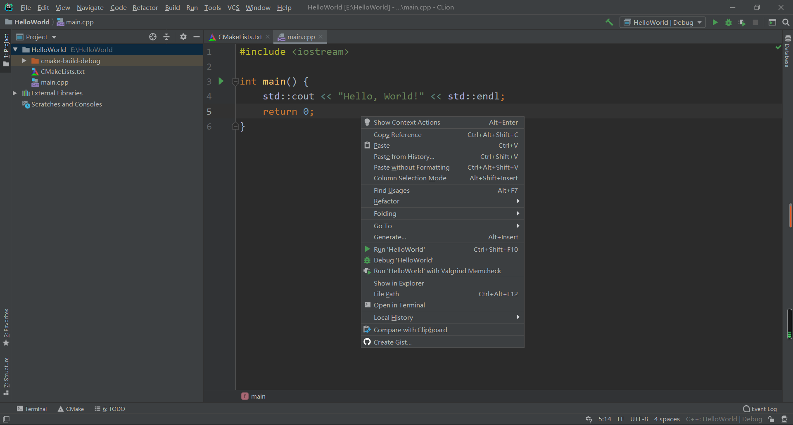
或者点击右上角的绿色剪头即可运行程序。
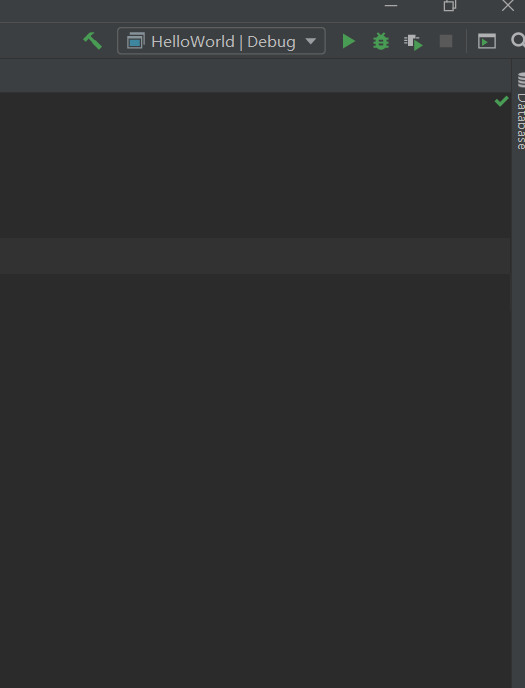
The End。
# Eighth：CLion进阶
# Ninth: CLion扩展工具
- Qpro, author: RhythmLian(必须保证电脑拥有Python)